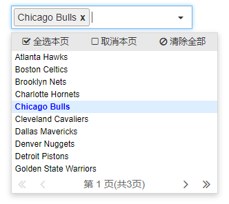

A Simple style and powerful selection plugin
The icons in SelectPage used are made by IconFont
Last released version: v
jQuery plugin
SelectPage basis on jQuery 1.x library development
Simple interface
The interface of SelectPage was simple and friendly, do not need to modify the style can be easily used in a variety of UI
Remote data
The datasource can be local json data, can also be remote data (ajax) too
Dropdown list
待选项目将以下拉列表的形式进行展示
Autocomplete
根据在输入框中输入的关键字时行快速检索，并在列表中展示匹配的项目
Pagination
待选项目在超过一定数量时，可根据指定的每页显示数进行分页展示
Multiple select
打开插件多项目选择功能后，选中的项目将以标签（Tag）的形式存放在输入框中
Keyboard navigate
插件的下拉，分页等操作均可以使用键盘进行快速导航、操作，提高输入效率
I18n
支持国际化多语言切换，在国际化的项目中可快速应用